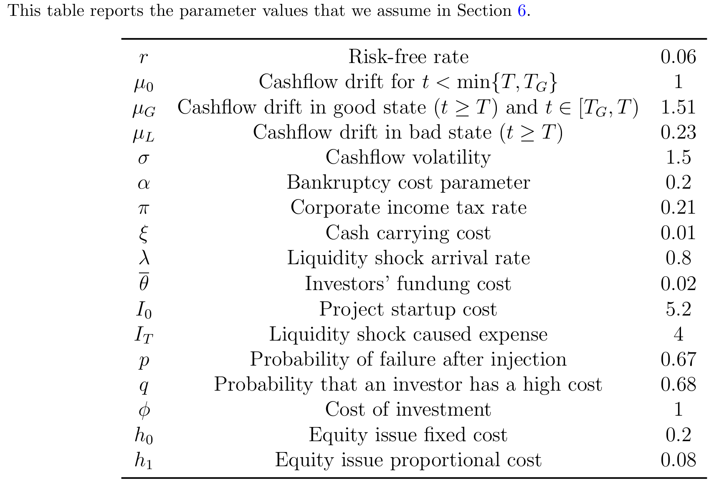
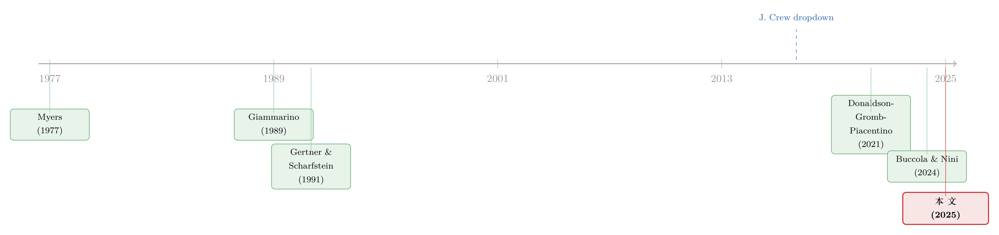

把抵押品从老债主手里「抢」过来，反而是件好事？
本文读的是 Antill, Jiang & Wang (2024, SSRN)：当一家陷入困境的公司，把抵押品从原有银团贷款债权人手里剥离、转手抵押给新的出资人——业界称之为「债权人互害」（creditor-on-creditor violence）。作者用一个三期模型证明，这种看似「损人」的操作，恰恰能缓解债务重组中因信息不对称而生的债务积压问题，事前反而提升了企业的总价值。这就解释了一个令人费解的事实：为什么直到今天，债务合约还在主动允许这种「互害」发生。
1 一桩「合法的抢劫」
2020 年，化妆品巨头露华浓（Revlon）正深陷泥潭：背着一大笔有抵押的定期贷款，销售却在下滑。这年五月，它做了一件后来被反复诉讼、却最终被法院判为「有效」的事。
它先说服了刚好持有过半数（just over 50%）定期贷款的一个债权人联盟，同意修改信贷协议。修改后的协议允许露华浓把抵押品「掉收」（dropdown）进一家不受原协议约束的新子公司。这个联盟向露华浓注资 $910 million、并把手里 $950 million 的旧贷款滚动展期，换来了一份由那批「新腾出来的」抵押品担保的新债券。露华浓拿到了 9.1 亿美元的流动性，参与联盟保住了自己的优先受偿地位。
代价由谁承担？是那批没被请进门、持有将近一半贷款的债权人。他们在违约时丧失了对抵押品的权利。二级市场用脚投票：这笔贷款的价格从面值的 80% 一路跌到 28%（Mugford and Gulick, 2022）。
露华浓不是孤例。J. Crew 在 2017 年做了第一笔掉收，Serta Simmons 在 2020 年做了第一笔「上提」（uptier）。这类交易在过去十年里越来越常见。放贷的人愤怒地称之为「债权人互害」——一个债权人踩着另一个债权人上位；而做这件事的公司，则文雅地称之为「负债管理操作」（liability management exercise, LME），说它是增加流动性、避免破产的良方。
两种叫法，两种立场。 批评者说：这些「勉强合法」的交易往往很快就跟着一场破产（露华浓正是如此），它腐蚀了整个企业借贷体系的信任；支持者说：它能注入流动性、避免本可以避免的破产。
谁对？这正是本文要回答的问题。而真正让人坐立不安的，是 Buccola and Nini (2024) 翻遍近年贷款合约后发现的一个事实：合约本可以改写来堵死掉收，但它们没有。在 LME 流行起来之前和之后，大约一半的合约都允许这种操作。
如果 LME 真是纯粹的「价值毁灭」，理性的当事人为什么不在签约时就把它禁掉？市场长期容忍它的存在，本身就是它在创造价值的间接证据。这是全文的核心张力。
2 先问一个更朴素的问题：困境公司为什么不能好好谈判？
要理解 LME，得先理解它替代的是什么——传统的债务重组谈判。
设想一家公司已经资不抵债（insolvent），需要一笔新流动性才能避免一场代价高昂的破产。这里立刻冒出一个经典的债务积压（debt overhang, Myers 1977）问题：避免破产的好处，主要落在债权人头上（破产成本砸的是他们），而权益方（股东）并不内部化这份好处。于是股东缺乏动力去促成那笔本应发生的融资。（关于债务积压如何扭曲投资，也可参见《同样欠着债，为什么「学门手艺」比「多上一天班」更扛得住？》。）
按理说，这个问题可以靠谈判解决——公司和债权人坐下来重新议价就行。而且定期贷款不像广泛分散的债券，它通常只攥在少数几家对冲基金手里，所谓的「钉子户」（holdout）和搭便车（free-rider）问题没那么严重：人少，每一家都很可能是「关键一票」（pivotal），所以谁也不敢轻易指望别人去救火。
接着，一个自然的问题是：既然搭便车不是主要障碍，谈判为什么还是会破裂？
本文给出的答案，是一个被以往文献忽略的摩擦：信息不对称（asymmetric information）。
作者假设，向困境公司提供流动性需要专门的能力，所以接盘旧贷款的是一批不同于初始银行的专业投资者（对冲基金），他们因为这份专长而赚取超额回报。但关键在于——每一家投资者要求的回报 \(\theta_i\) 是私人信息，公司看不见。有的基金外部选择好、机会成本高，就要价很高；有的则愿意便宜出手。公司不知道自己面对的是哪一种。
于是债务积压换了一副面孔重新登场。股东只有一次机会做「要么接受、要么走人」（take-it-or-leave-it）的报价，他面临一个权衡：
- 报一个高回报：成交概率大，但万一对方本来要价就低，等于白白让渡了价值；
- 报一个低回报：万一对方要价低就赚到了，但如果对方要价高，就会被拒绝，公司随之破产。
本文证明了一个干净的门槛结果：当且仅当杠杆超过某个阈值时，股东会在事后选择报低回报、宁可冒着谈崩破产的风险。这正是债务积压的翻版——股东在「购买流动性」这件事上投资不足，因为避免破产的盈余有一部分要分给债权人，而信息不对称又让他无法把这份盈余全额攫取过来。
再往前推一步到第一期：银行预见到事后可能发生这种低效破产，于是一开始就压低了愿意为这笔不良债务支付的价格、抬高了贷款利率。信息不对称，让困境公司无法通过谈判高效地避免破产。 这是本文的第一个结论。
3 反转：把「互害」请进合约，反而对齐了激励
现在把 LME 放进同一个模型。规则很简单，也正是露华浓那笔交易的本质：
如果多数投资者同意一项 LME，那么拒绝这项报价的投资者，将丧失自己的抵押品权利。
先看事后这一层。对于股东给出的任何一个固定回报，在有 LME 的情形下，投资者会更愿意接受。逻辑直白：拒绝的代价变大了——一个拒绝者，在公司随后破产时将拿到零回收。
但真正关键的一步，在于把时间往回推。本文证明：LME 让股东更愿意去报那个「保证成交」的回报。 为什么？因为 LME 允许股东通过把抵押品从拒绝的债权人转移给接受的债权人来筹集流动性。这种「转移」让股东内部化了成功融资的更多好处——于是他更愿意支付那个必要的回报去锁定成功。
换句话说，LME 把股东的利益和企业价值最大化更紧地绑在了一起，从而缓解了谈判中的债务积压。这与前一节那个「事后投资不足」的故事正好相反：抵押品的剥离权，成了对齐激励的工具。
再退回第一期：银行当然预见到未来抵押品会被「掉收」走，于是会收取更高的利率作为补偿。但请注意——这只是一笔转移。事前的总盈余反而上升了，因为低效的破产被避免掉了。正因如此，本文证明：股东在事前会主动选择允许 LME。
这恰好解开了第 1 节的谜题。合约长期允许「互害」，不是当事人愚蠢或疏忽，而是因为这项条款在事前确实创造价值——尽管它抬高了借款成本。批评者（成本上升）和支持者（避免破产）都说对了一半。
那剩下的一半合约为什么要禁止掉收？本文在 Subsection 4.4 给出了对称的答案：如果在某些公司里，「筹集流动性」本身就是低效的（破产才是有价值的结局），那么 LME 会让事情更糟。于是这些公司事前就把掉收禁掉。模型因此同时解释了「为什么有人开、有人关」这个 50/50 的经验事实（Buccola and Nini, 2024）。
4 模型：把直觉写成一个最优机制
本文的核心贡献是理论形式化。为了把上面的直觉讲到底，作者在附录里用机制设计（mechanism design）的语言，刻画了股东能达到的最优重组方案——它给出了「传统重组」与「LME」两种制度下、股东价值的封闭表达式，两者之差就是全文的灵魂。
设定。 三期模型。第二期公司陷入困境，需要投入 \(I_1\) 的流动性。\(n\) 家（更一般地，\(N\) 家中的 \(n\) 家参与）投资者各自私下观察到自己的要求回报 \(\theta_i\)，其分布的累积分布函数与密度记为 \(F_i,\,f_i\)。若融资成功，公司以概率 \(1-p_2\) 避免破产、拿到高现金流 \(C^H\)；\(C^L\) 是抵押品（清算）价值。股东设计一套机制，决定在何种报告下融资（用指示 \(A(\theta)\)）、向谁投钱（\(I_1^i\)）、以及转移支付 \(K_1^i\)，需要满足投资者的参与约束与讲真话约束。
第一步：讲真话约束的包络条件。 对每个投资者，讲真话要求他在 \(\hat\theta_i=\theta_i\) 处取到最优，即一阶条件 \(U_2(\theta_i,\theta_i)=0\)。把对角线效用记为 \(\widehat U(\theta_i)\equiv U(\theta_i,\theta_i)\)，由包络定理（envelope theorem）：
$$\frac{d}{d\theta_i}\widehat U(\theta_i) = U_1(\theta_i,\theta_i) = -\frac{n}{N}\int_{J^{n-1}} A\!\left(\{\theta_i,\theta_{-i}\}\right) I_1^i\!\left(\{\theta_i,\theta_{-i}\}\right) f_{-i}(\theta_{-i})\,d\theta_{-i}\ \le 0.$$
这一步说明：投资者的「信息租金」随类型 \(\theta_i\) 单调变化——要价越高，被投钱的概率越低，这是任何能诱导讲真话的机制都逃不掉的代价。
第二步：分部积分，把租金折算进目标函数。 对 \(\theta_i\) 求期望并用 \(f_i=F_i'\) 做分部积分，可以把每个投资者的信息租金整理成熟悉的「逆风险率」（inverse hazard rate）\(F_i(\theta_i)/f_i(\theta_i)\)。把它代回股东的价值 \(V\)，并在「传统重组」下利用 \(\widehat U(\overline\theta)=X\)、\(Y=0\)，最终得到（论文式 F.26）：
$$V_{\text{trad}} = \int_{J^n}\left[(1-p_2)\!\left(C^H-K_0^*\right) - I_1\,\min_{1\le i\le n}\!\left(1+\theta_i+\frac{F_i(\theta_i)}{f_i(\theta_i)}\right)\right]^{+} f(\theta)\,d\theta.$$
这里的 \(\min_i\big(1+\theta_i+F_i/f_i\big)\) 是典型的 Myerson 式「虚拟成本」：股东只会选成本最低的那一家投资者，而 \(F_i/f_i\) 这一项正是信息不对称强加的额外加价。外层的 \([\,\cdot\,]^{+}\) 表示——只有当括号里的净盈余为正时，融资才会发生；否则公司破产。信息租金抬高了虚拟成本，于是有些本该被救的公司，被卡在了 \([\,\cdot\,]^{+}=0\) 的那一侧。
第三步：加入 LME。 在 LME 下，拒绝者在破产时回收为零，参与者瓜分了「剥夺」非参与者带来的好处，对应 \(Y=p_2 C^L\big(\tfrac1n-\tfrac1N\big)\)。沿同样的步骤推导，得到（论文式 F.31）:
把 LME 的 \(V\) 和传统重组的 \(V_{\text{trad}}\) 摆在一起，唯一的区别就是括号里多出来的那一项 \(p_2 C^L\)。它把整个方括号往正的方向推，于是 \([\,\cdot\,]^{+}>0\) 在更多的 \(\theta\) 取值上成立——融资成功的范围扩大，低效破产减少。论文据此证明（Proposition 8 的第 2 部分）：只要筹集流动性是高效的，LME 就一定提升价值。 模型至此走通：那看似「损人」的 \(p_2 C^L\)，正是把股东的私利掰回到社会效率方向上的那只手。
5 走进连续时间：LME 如何改写资本结构
最后，作者把 LME 嵌入一个连续时间的公司投资与流动性管理模型（Section 6），用动态扩展来看 LME 的「事前」总账。把「带 LME」的解和「只有传统谈判」的解相比，结论一以贯之：LME 降低了低效谈判破裂的风险，从而压低了预期违约成本，提升了事前的企业价值、最优杠杆与事后投资。 在更早的 Subsection 5.7 里，作者用一个极简的动态权衡模型也得到同样的方向——允许 LME 会抬高最优杠杆，因为预期破产成本下降了。这一节用到的参数取值如表 1 所示。

Table 1: Parameter Values for the Dynamic Model Extension
值得一提的是，Section 5 还做了一长串稳健性检验，把核心结论（LME 缓解谈判中的债务积压）推广到：任意有限个投资者、相当一般的回报分布、最优设计的信息甄别机制、引入非债权人出资方、投资者异质信念、以及事前发行无担保债以「预留」抵押品等情形。作者也诚实地指出 LME 不是唯一的解药——它只是企业最近新添的一件工具，与期限选择、契约设计、无担保债、债券与银行债之间的取舍、信贷额度、破产中的 DIP 融资等老办法并列。
6 文献脉络
把这篇论文放回它生长的那条藤上，会看得更清楚。
故事的源头是债务积压（Myers, 1977）：股东不内部化避免破产的好处，于是投资不足。随后是一整支研究困境债务重组的庞大文献——Bulow and Shoven (1978)、Hart and Moore (1988, 1998)、Gertner and Scharfstein (1991)、Aghion and Bolton (1992)、Bolton and Scharfstein (1996) 等等——它们大多把焦点放在不完全契约与谈判破裂上。
本文在理论上最贴近的，是 Giammarino (1989)、Detragiache and Garella (1996) 和 Donaldson, Gromb, and Piacentino (2021) 这一支：它们指出不同形式的信息不对称（关于抵押品价值、企业基本面或借款人信用）会阻碍重组。本文的贡献，是把摩擦精确地落在「债权人要求回报的私人信息」上，并论证在定期贷款这个少数对冲基金持有的场景里，这才是比钉子户更相关的摩擦。

从实务的角度，本文与退出同意（exit consents）的文献血缘最近——Gertner and Scharfstein (1991)、Kahan and Tuckman (1993)、Bernardo and Talley (1996)、Hege and Mella-Barral (2005)、Donaldson et al. (2020)。退出同意同样允许公司把价值从不参与的债权人那里转走，但它针对的是债券、剥的是契约保护，应对的是钉子户问题；而 LME 针对定期贷款、剥的是抵押品，应对的是关于要求回报的信息不对称。这条界线，本文在 Subsection 5.2 里做了形式化区分。
最近，法律与金融交叉的一支文献（Dick, 2021；Ayotte and Scully, 2021；Buccola, 2023；Ayotte and Badawi, 2023；Buccola and Nini, 2024；McKinley, 2024；Ivashina and Vallee, 2025）开始非正式地讨论 LME 是否能缓解债务积压。但本文是第一篇为「LME 如何在事前创造价值」给出正式模型的工作。一个有趣的对照是 Ayotte and Badawi (2023)：他们用遗传算法说明，即便 LME 是一个毁灭价值的「瑕疵」，它也是合约「学习」过程中必经的一环；而本文则用一个带理性预期的传统经济模型，给出了「合约持续允许 LME」的另一种解释。
（顺带一提，这种「债权人与债务人在谈判桌上互相拿捏」的张力，与续贷里把债务人变成债主「人质」的逻辑遥相呼应，可参见《欠你一千万的人，其实是债主的「人质」》；而合约中「承诺」与「相机抉择」的取舍，也可对照《中间商管不住自己的手——为什么「短债」反而治好了银行的食言》。）
7 评论与延伸（Q&A + 研究方向）
(a) 几个可能的疑问
Q：LME 和退出同意（exit consent）到底差在哪里？
两者都允许公司把价值从「不参与」的债权人那里转走，但针对的市场和摩擦不同。退出同意用于债券重组，剥离的是保护性契约，缓解的是分散持有人的钉子户问题；LME 主要用于定期贷款，通过法律创新剥离抵押品，缓解的是关于债权人要求回报的信息不对称。本文在 5.2 节证明，即便退出同意可用，LME 仍能创造额外价值。
Q：既然定期贷款只攥在几家对冲基金手里，搭便车不严重，谈判为什么还会失败？
正因为人少，搭便车（free-rider）问题被大大缓解——每家都很可能是关键一票。但「人少」并不能解决信息问题：股东依然看不见每家基金私下的要求回报 \(\theta_i\)，于是只能做一次性报价、在「报高让利」与「报低冒险」之间权衡。当杠杆超过阈值时，他理性地选择报低、宁可冒破产风险。这是一个独立于持有人数量的摩擦。
Q：把抵押品从老债主手里抢走，听起来纯粹是「损人利己」，怎么会提升总盈余？
关键要区分转移与效率。抵押品的剥夺本身只是从拒绝者到参与者的一笔零和转移；但它改变了股东的事前激励——让股东内部化了 \(p_2 C^L\) 这部分好处，从而更愿意去促成那笔本应发生的融资，避免一场带来巨大无谓损失的破产。提升的是效率（少了一场低效破产），代价由失去抵押品的债权人承担，且这笔成本会通过更高的事前利率被「定价」回去。
Q：那为什么还有大约一半的合约禁止掉收？
因为 LME 是把双刃剑。本文 4.4 节证明：如果对某些公司而言，「筹钱续命」本身是低效的（破产才是更有价值的结局），那么 LME 会让股东过度地去避免破产，反而损害效率。这些公司事前就会理性地禁掉掉收。模型因此能同时解释「开」与「关」并存的 50/50 事实。
Q：模型为什么假设公司一定向现有债权人融资，而不去找外部新投资者？
这不是外生假设，而是被证明出来的结论：作者证明，向现有债务持有人寻求融资是最优的。直觉上，现有债权人在破产中本就持有抵押品权利，用 LME「威胁」他们（拒绝即零回收）能最有效地撬动让步，外部新投资者没有这层可被剥夺的存量权利。
Q：借款成本上升，难道不是实打实的坏处吗？
是成本上升，但它是被「公平定价」的转移而非净损失。银行在第一期预见到未来抵押品会被掉收，于是抬高利率作为补偿；这笔钱从股东流向债权人，社会总盈余并没有因此减少。只要避免的低效破产足够多，事前总价值净增加，股东自愿选择开启 LME。
(b) 几个可能的研究问题与提案
1. 被排除债权人的二级市场价格反应（事件研究）
【经济故事】模型预测，LME 让参与者保住优先权、让被排除者承受巨大损失（露华浓：80%→28%）。能否系统地量出「参与 vs 被排除」两组贷款/债券在 LME 公告窗口的价格分化，并检验分化幅度是否随杠杆、抵押品价值变化？【可行性】中。需要 LSTA/IHS Markit 的贷款报价与 TRACE 的债券价格，配合 Buccola-Nini 对 LME 交易的分类与时点。识别难点在公告时点的精确界定与同期混杂事件。
2. 外资持有人与 LME 的发生概率
【经济故事】银团贷款的二级持有人中，外国 CLO、对冲基金占比不小。外资持有人信息更不对称、协调成本更高，理论上既可能更难凑齐过半联盟，也可能更容易成为「被排除」的一方。【可行性】中。需 Shared National Credit 或 DealScan 持有人数据匹配持有人国籍，以 LME 发生与否为结果做横截面/面板回归。识别上需处理持有人结构的内生性（可用初始银团分配做工具）。
3. 「允许掉收」条款的事前利差溢价
【经济故事】模型的一个干净预测是：允许 LME 的合约，事前利率更高（补偿未来抵押品剥离），但这只是转移、不损害效率。能否在贷款发行数据里识别出这块溢价？【可行性】中。Buccola and Nini (2024) 已对合约是否允许掉收做了分类，配合 DealScan 的发行利差，可做带固定效应的横截面比较。难点是「允许掉收」与企业风险、行业的共线性。
4. LME 之后被 prime 资产的流动性变化
【经济故事】被「插队」（priming）之后，原贷款/债券的回收预期骤降，其二级市场流动性（买卖价差、成交频率）可能恶化。这把「债权人互害」与流动性这条线连起来。【可行性】中偏高。需 TRACE/贷款交易微观数据，难点是 LME 样本量有限、事件稀少。
5. 动态模型杠杆含义的结构检验
【经济故事】Section 6 预测「可用 LME → 最优杠杆更高、事后投资更多」。能否用允许/禁止掉收的合约异质性，检验是否对应更高的初始杠杆与投资水平？【可行性】中。需把合约层面的 LME 可得性匹配到公司层面的资本结构与投资，识别仍受制于合约选择的内生性。
8 我的判断
这是一篇漂亮的理论论文。它的贡献清晰而锋利：把一个被实务界激烈争论、被法律文献反复念叨却始终没有正式刻画的现象，第一次装进了一个带理性预期的标准模型，并给出一个反直觉却自洽的结论——「债权人互害」之所以被合约长期容忍，是因为它通过把抵押品的剥夺权交到股东手里，缓解了重组谈判中由信息不对称催生的债务积压。\(V\) 与 \(V_{\text{trad}}\) 那个仅差一项 \(p_2 C^L\) 的对比，把整套直觉压缩成了一行代数，干净得令人信服。
我的保留主要在模型对识别的依赖。整套结论建立在「信息不对称是定期贷款重组的主要摩擦」这一假设上；作者论证了它比钉子户更相关，但这终究是一个建模选择而非经验事实。现实中的 LME 还交织着诉讼风险、声誉成本、跨债权人的策略性结盟（Huang, Lewellen, and Wang, 2024 研究的正是债权人联盟），这些在三期模型里都被抽象掉了。尤其是「这只是一笔公平定价的转移」这个论断——它依赖于第一期银行能完全理性地预见并定价未来的掉收。一旦初始定价存在系统性偏差（比如银行低估了 LME 的概率），那么「事前总盈余上升」的结论就会松动，批评者口中的「侵蚀信任」可能就有了实质内容。
我接下来最想看到的，是经验上的对账。模型给出了几个可检验的、方向明确的预测：被排除债权人的价格分化、允许掉收合约的事前利差溢价、LME 可得性与杠杆/投资的正相关。如果未来有人能在贷款与债券的微观数据里把这几条逐一验证——哪怕只是部分——这套理论的说服力会上一个台阶。在那之前，它已经为我们理解信用市场里这场愈演愈烈的「互害」，提供了一副难得清醒的眼镜。
参考文献
- Antill, S. (2022). Are bankruptcy professional fees excessively high? Working paper.
- Ayotte, K., & Badawi, A. (2023). Could a chatbot have written the Trust Indenture Act? Working paper.
- Ayotte, K., & Scully, J. (2021). J. Crew, Nine West, and the complexity of financial distress. Working paper.
- Buccola, V. (2023). Sponsor control: A new paradigm for corporate reorganization. University of Chicago Law Review.
- Buccola, V., & Nini, G. (2024). The loan contract structure of liability management. Working paper.
- Detragiache, E., & Garella, P. G. (1996). Debt restructuring with multiple creditors and the role of exchange offers. Journal of Financial Intermediation 5(3), 305–336.
- Donaldson, J. R., Gromb, D., & Piacentino, G. (2020). The paradox of pledgeability. Journal of Financial Economics 137(3), 591–605.
- Donaldson, J. R., Gromb, D., & Piacentino, G. (2021). Conflicting priorities: A theory of covenants and collateral. Working paper.
- Gertner, R., & Scharfstein, D. (1991). A theory of workouts and the effects of reorganization law. Journal of Finance 46(4), 1189–1222.
- Giammarino, R. M. (1989). The resolution of financial distress. Review of Financial Studies 2(1), 25–47.
- Ivashina, V., & Vallee, B. (2025). Complexity in loan contracts. Working paper.
- Kahan, M., & Tuckman, B. (1993). Do bondholders lose from junk bond covenant changes? Journal of Business 66(4), 499–516.
- McKinley, M. (2024). Liability management exercises and debt capacity. Working paper.
- Myers, S. C. (1977). Determinants of corporate borrowing. Journal of Financial Economics 5(2), 147–175.